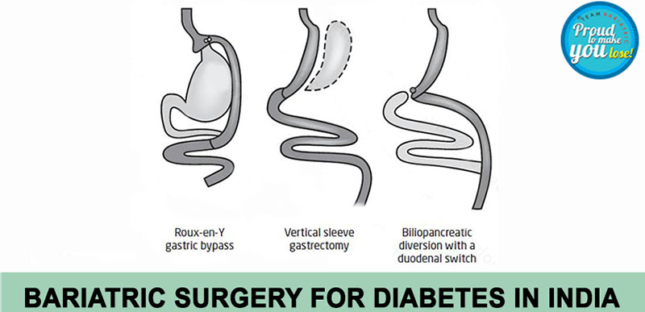

Effective Management of Diabetes Through Bariatric Surgery
Obesity has become the principal cause of Type 2 Diabetes Mellitus these days. Excessive fat deposition leads to insulin resistance, which results in metabolic syndrome. There are various ways to treat type 2 diabetes including lifestyle modification, weight reduction, and drugs including insulin. All these conventional methods have proved to be inefficient in achieving long-term results, highlighting the need for effective management of diabetes.
Surgery has evolved as the most efficient alternative to conventional treatment and results in sustained weight loss and remission or resolution of type 2 Diabetes.
Bariatric and metabolic surgery changes the anatomy of the gastrointestinal tract in a beneficial way, this alteration increases good hormones. After bariatric surgery, there is an augmented release of hormones like GLP-1 and PYY from the small intestine that leads to improvement in high blood sugar levels.
Since bariatric surgery is a highly efficient tool to reduce the blood sugar levels in an obese diabetic patient, there is a need for adjustment of anti-diabetes medicines in these patients post-surgery.
Moreover, there is decreased calorie intake after bariatric surgery for which dose adjustments of the anti-diabetes medicines are needed.
The post-operative diet schedule includes:
- Phases 1 and 2 are of clear liquids to a full liquid diet for 2 weeks. At this stage, the calorie intake is about 600 to 800 kcal/day.
- Phase 3 is of pureed diet.
- Phase 4 consists of a soft to normal diet and the calorie intake is about 1200 to 1500 kcal/day.
Before surgery, patients are usually switched over to intravenous insulin, and blood glucose is monitored at regular intervals.
Similarly in the postoperative period, blood sugar is again maintained on intravenous insulin. On discharge, the patient is shifted to tablets along with long-acting insulin in most of cases for an initial few days.
The patient is taught to measure and chart blood sugar twice daily or in a few cases thrice daily and the doses are adjusted accordingly. Subsequently, as patients lose weight, there is a further decrease in the requirement for drugs. Most of the time, almost all of the drugs are withdrawn to avoid any hypoglycemic episode. It is advised to maintain a blood sugar level between 120 to 150 mg %. Remission of diabetes is seen in close to 80% of patients who do not need any treatment. There is a continuous need for follow-up with at least 3 monthly HbA1c levels.
In patients with poorly controlled diabetes mellitus, withdrawal of drugs may precipitate ketoacidosis in the early postoperative period. These patients are monitored carefully for symptoms and signs of diabetic ketoacidosis.
General guidelines:
To Monitor blood glucose at least twice a day with the aim of maintaining it between 110-180mg/dl.
Tab Metformin is started on day 1 of surgery. The long-acting insulin doses are reduced by 50%.
- Signs and symptoms of stress hyperglycemia include frequent urination, increased thirst, blurred vision, fatigue, headache or ketoacidosis which includes fruity-smelling breath, nausea and vomiting, shortness of breath, dry mouth, weakness, confusion, coma, abdominal pain, etc. They must be addressed carefully and must be monitored by watching blood gases as well as urinary ketones.
- Patients must be educated about signs and symptoms arising from hypoglycemic episodes (Blood sugar less than 70 mg%) like shakiness, dizziness, sweating, hunger, irritability or moodiness, anxiety or nervousness, and headache.
- During such episodes, the patient must take 15-200 ml of fruit juice or milk if on a liquid diet. And if on solids, any sweet candy. Similarly patient can take curd or yoghurt if on a pureed diet.
- Such people must take adequate protein to avoid episodes of hyper or hypoglycemia.
Looking for diabetes surgery in Delhi? Schedule an appointment with us at Smart Cliniqs.
Back to Blog